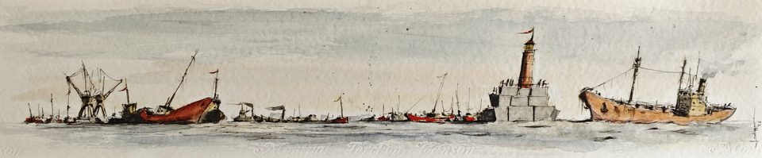
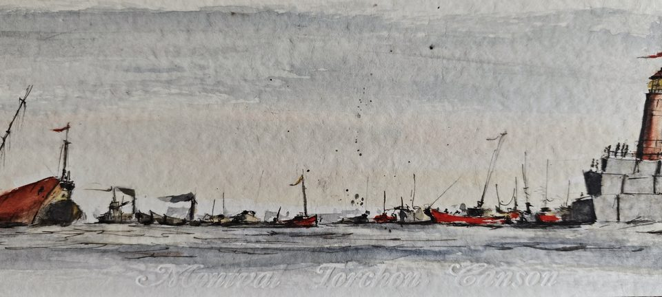
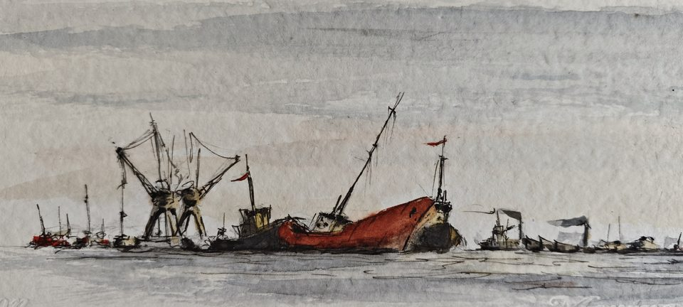
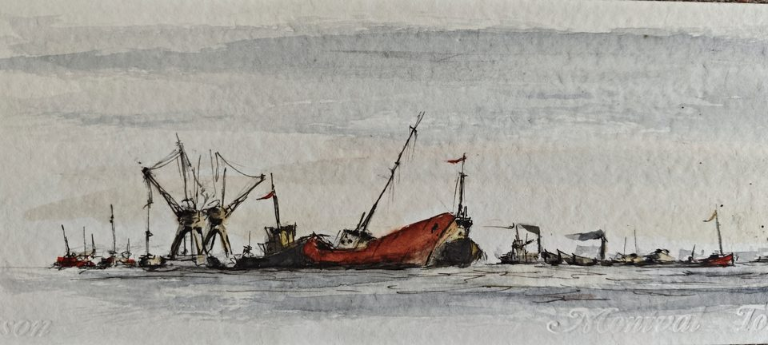
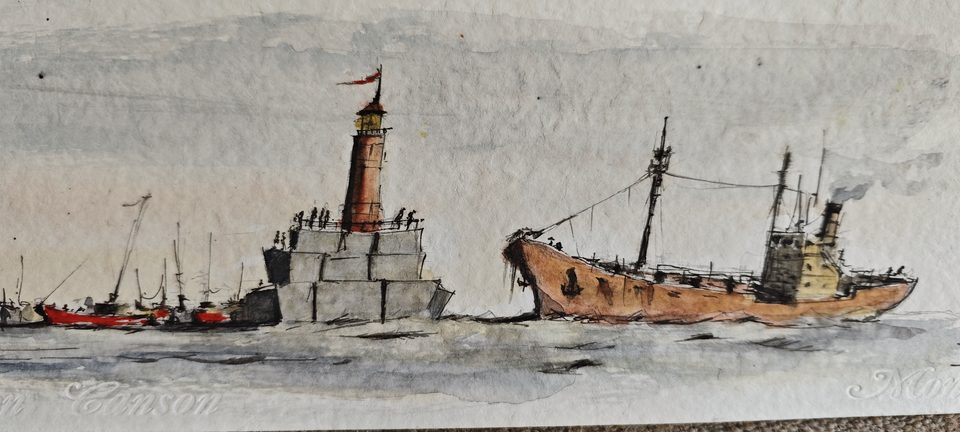

Diario
Barcos que esperan
Un barco amarrado no está quieto: está esperando el viento.
Publicado





Hay una obra extensa sobre el muelle: una hilera de barcos amarrados, unos sobre otros, con las proas mirando al mismo lado. No es una escena: es una espera.
Cada barco tiene su postura. Uno se inclina, otro se endereza, un tercero parece dormir. Juntos forman una línea que no es recta: es la línea de la paciencia.
El muelle sostiene todo. Las amarras, las defensas, las sombras que caen sobre el agua. Sin el muelle no hay obra: solo barcos sueltos en un mar sin orilla.
Pintar barcos amarrados es pintar quietud sin aburrimiento. El desafío está en que cada uno respire distinto, aunque ninguno se mueva.
La obra es larga porque la espera es larga. No se puede acortar sin mentir: cada barco necesita su espacio, su sombra, su silencio.
Los barcos esperan. El agua también. El muelle los sostiene a los dos. Esa es la obra: no el barco, sino la espera compartida.
Un barco amarrado no está quieto: está esperando. El muelle es el que le da tiempo.
Fuentes: observación directa en el muelle; cuaderno de taller, noviembre de 2026.